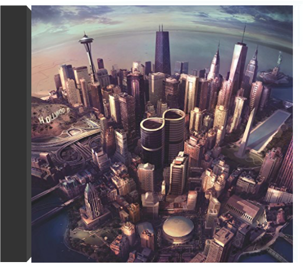

there is nothing left to losefoo fighters there is nothing left to losefoo fighters  Dans ce troisième album, Dave Grohl, l'ex-batteur de Nirvana prouve avec son groupe combien l'on peut être et avoir été. Peut-être est-il même encore davantage avec les Foo Fighters que dans l'ombre de Kurt Cobain, finalement, Dave Grohl. Et lorsqu'il proclame en titre qu'"il n'y a plus rien à perdre", il ne se contente pas de foncer tête baissée, il connaît aussi les enjeux. Il monte en première ligne, guitare en bandoulière. Et l'album avec ses 9 plages haute tension passe comme une lettre à la poste. Tout à l'énergie, avec même un brin d'humour ici et là, comme dans "Learn To Fly". Les Foo Fighters laissent de côté toute prétention, et libèrent leur naturel pop et nerveux avec même quelque répit parfois, pour mieux charger par la suite. On se prend à penser que finalement la fin d'un groupe majeur peut donner le jour à un autre, plutôt intéressant, même si moins exposé ! Sans doute ce que voulait Dave Grohl, justement. —José Ruiz  one by onefoo fighters one by onefoo fighters Ceux qui apprécient la simplicité basique du rock violent que délivre régulièrement l'ex-batteur de Nirvana, Dave Grohl, que ce soit avec ses Foo Fighters ou en qualité de digne serviteur de la musique des Californiens Queens Of The Stone Age, seront ravis. La dynamique hardcore du combo demeure inchangée depuis le premier album homonyme paru en 1995. Celui-ci, qui est déjà le quatrième, enfonce encore plus loin le clou planté avec le précédent et brûlant There Is Nothing Left To Lose qui se terminait en apothéose et laissait augurer une suite du même acabit : survitaminée ! Quasi constamment en zone rouge, Grohl et les siens distillent une poignée de titres imparables, dont "All My Life" et "Low" qui figurent parmi les meilleurs. Soit des hymnes au fort relent de punk, qui, bien évidemment, évoquent Nirvana avec leurs tempos plombés et leurs riffs acérés. Du panache, les Foo Fighters en ont encore à revendre. Bien que cela ne soit pas le plus important, on notera par ailleurs que le groupe a fait appel au graphiste Raymond Pettibon pour illustrer la couverture du livret de One By One. On lui doit, entre autres, quelques-unes des plus illustres pochettes de l'histoire du hardcore (notamment pour Blak Flag et le label SST) et celle de Goo de SonicYouth. Pour les Foo Fighters, c'est aussi une façon comme une autre de souligner l'héritage ! —Hervé Comte sonic highwaysfoo fighters Groundbreaking 2014 album. 8 songs written & recorded in 8 different cities in collaboration with local artists. The whole process documented in the companion HBO TV series!  hors-saisonfrancis cabrel hors-saisonfrancis cabrel Francis Cabrel fait partie des artistes rythmés par un métronome. Tous les cinq ans, un nouvel album : Sarbacane en 1989, Samedi soir sur la terre en 1994, Hors-saison en 1999. Sans doute a-t-il besoin, pour se ressourcer, d'aller se retirer en famille dans le sud-ouest de la France. Quoi qu'il en soit, le résultat est toujours à la hauteur des espérances et les ventes défient la logique. Chacun des trois derniers albums a dépassé le million d'exemplaires ! Si Cabrel signe toujours paroles et musique, il fait ici une exception avec l'adaptation d'un titre d'Otis Redding ("Depuis toujours"). Pour le reste - des chansons originales - il alterne entre violence raisonnée sur notre société et sentiments pudiques sur les relations humaines. "Le monde est sourd", "Presque rien", "Le Reste du temps" viennent s'ajouter à la liste de ses succès. Quant à la chanson-titre "Hors-saison", au thème pourtant très proche de celui de "La Madrague" de Bardot ("sur la plage abandonnée..."), c'est sans aucun doute la plus belle de l'album. Ce n'est pas sans raison que, une fois de plus, 1 million de fans ont plébiscité l'album et lui ont donné la forme d'un diamant. —J.-P. P. et Thierry Cadet  sagittariusfrank cunimondo trio sagittariusfrank cunimondo trio Frank Cunimondo has an extensive discography, having recorded with nearly every artist from Pittsburgh. In addition, he has shared the stage with a number of jazz stars including: Sonny Stitt, Lou Donaldson, Jimmy Witherspoon, Urbie Green, Lee Konitz, Louie Bellson, Joshua Redman, Phil Woods and Frank Rosolino. The Frank Cunimondo Trio is also a fixture of the Pittsburgh Jazz scene.Frank's most popular recording 'Feelin' Good' (from the album The Frank Cunimondo Trio Introducing Lynn Marino [MOVLP1821]) was used in a commercial by a popular beer brand and became an international hit.In the 80s Frank owned a jazz club in Pittsburgh called 'Cunimondo's Keyboard Jazz Supper Club.' In 1989, he was voted 'Best Jazz Pianist' in Pittsburgh. His style is most often compared to pianist Bill Evans.The Frank Cunimondo Trio originally released Sagittarius on Mondo Records in 1975. It includes a cover of Herbie Hancock's 'Chameleon'. On the album Frank Cunimondo plays acoustic and electric pianos, string ensemble, synthesizer, conga and cabasa while Ray Russell plays bass and Lenny Rogers drums. |


 Made with Delicious Library
Made with Delicious LibraryNancy, State zipflap congrotus delicious library Thomas, Julien